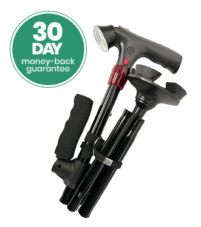

Sponsored Article
(And why you should too – before it's too late)
 Author: Stacy Miller
Last Updated:
Author: Stacy Miller
Last Updated:

But one morning, I got a call that I hope you never receive. My father was distraught, and I could barely understand what he was saying.
I rushed over immediately, only to find my mother curled up in pain on the floor. She couldn't get up.
Father found her lying in the hallway. She had tried to get up at night to go to the bathroom, and her walking cane – the one we all thought was "fine" – had collapsed under her weight.
She had a bruised hip. A sprained wrist. And worst of all: her confidence was destroyed.
The next day, she refused to leave her bed. She didn't want to go for walks anymore. That one fall didn't just shake her body – it shook her independence.
Because that fall could have been fatal.
She is 87 years old. And after that day, I learned the painful truth:
Every year, over 36 million seniors fall in the US. And over 32,000 of these falls result in death.

It's not just about a bruise or fear.
It's about what happens next.
A fall often leads to surgeries, immobility, long-term care needs – and even death. And in many cases, the cause is the same:
The cane my mother was using "looked good"... but it was inferior.
It collapsed too easily. It was uncomfortable in the hand. Heavy in the wrong places and unstable at the base.
It didn't light her path. It didn't help her stand up. It didn't stand on its own. It was more of a fashion accessory than a medical device. And yet... millions of people rely on canes just like that every day.
Rickety folding canes from the pharmacy. Overpriced "fashionable" sticks with no ergonomic support. Medical-looking monsters that scream "weakness." No wonder so many elderly people stop leaving the house. They feel unsafe, ashamed, and afraid.
But I wasn't going to let that become my mother's story.

In a panic, I called my close friend Natalie. She is a licensed physical therapist and one of the smartest, most compassionate people I know. I needed advice – immediately.
When I told her what happened, she immediately said: "You need to get her the Coeurva Intelligent Walking Cane."
She told me this is the only cane she recommends to her patients after surgery and to aging clients.
It is more than a cane. It is a smart mobility system that supports the whole body.
And it has many features that simply make life easier and safer. When I saw it in action, I understood why.
As we age, our sense of balance and muscle responses decline. This is a natural process that renders an ordinary "stick" with a single rubber tip useless. If you lose your center of gravity, a standard cane slips away instead of supporting you.
The Coeurva Intelligent Cane works differently. It was specifically designed to solve balance issues in seniors.
It features a unique, rotatable base with four support points that functions like a "second human ankle."
Mechanical Stabilization: The base automatically adjusts its angle to the terrain.
4 Contact Points: Provides grip where an ordinary cane would slip.
Self-Standing Design: The cane doesn't fall over when you let go, so you don't have to bend down (which is a common cause of falls!).
This isn't just a prop – it's a stable foundation that "lends" you balance with every step.

The Coeurva Intelligent Cane isn't made of cheap plastic or hollow aluminum. It is crafted from anodized aerospace-grade aluminum alloy – strong enough for daily use, yet so light it feels like almost nothing in your hand.
It folds in one fluid motion, locks securely, and adjusts to your height thanks to a tool-free mechanism that actually holds – no more slipping or collapsing. And that's not all.
The adjustable side handle makes getting up from sofas, chairs, and even out of the car easier – providing a second point of support for safe and fluid standing.
Its wide, non-slip base with four feet grips the ground like a trekking pole, keeping you stable on everything from slippery tiles to cracked sidewalks.
And the smart features? This cane thinks for you.
 Built-in LED Light illuminates dark paths for safe walking at night.
Built-in LED Light illuminates dark paths for safe walking at night.
 One-Click Emergency Alarm can call for help in seconds if you fall or feel unsafe.
One-Click Emergency Alarm can call for help in seconds if you fall or feel unsafe.
 Soft, Ergonomic Handles reduce hand and wrist fatigue, even with all-day use.
Soft, Ergonomic Handles reduce hand and wrist fatigue, even with all-day use.
Compact, Travel-Friendly Form that fits into most handbags and luggage compartments.
This isn't a cane for just getting by.
It's a cane for getting back – back to walking safely, living independently, and moving without fear.
When I first saw my mother stand up without a grimace of pain, without hesitation... I almost cried. That wasn't just mobility. That was confidence. That was her returning to her old self.
So, whether you are recovering from surgery, battling arthritis, or simply need extra security with age...
The Coeurva Intelligent Cane is the standard every other cane should aim for.
My friend Natalie is a licensed physical therapist who sees dozens of patients every week – people post-hip surgery, knee replacements, and those with chronic balance issues. And she said:

"I have recommended every type of walking aid for years – but I trust the Coeurva Intelligent Cane the most. It is strong, supportive, and versatile enough to help patients at every stage of recovery. I have seen what a huge difference it makes."
Natalie P., Physical Therapist, MPT
And she is not the only one.
Dr. Alan Reese, a certified orthopedist with over 25 years of clinical experience, now recommends the Coeurva Intelligent Cane to many of his aging patients. Especially those with arthritis, post-operative instability, or age-related frailty.

"When I saw the build quality and thoughtful design of the Coeurva Intelligent Cane, I immediately began recommending it to my elderly patients. It's not just a cane – it's a mobility system. And when people feel more stable, they move more. When they move more, they live better."
Dr. Alan Reese, MD, Orthopedist
If it is good enough for professionals, it was good enough for my mom. And now she uses it every day.
"It is much lighter than I expected, but it still supports me. I just feel more comfortable when I have it."
Evelyn J.
"I didn't think I would use the light often, but now I use it every night. A real lifesaver."
George T.
"So easy to fold and carry. I keep it in my purse. It unfolds quickly and never wobbles."
Linda S.
"The alarm makes me feel safer when I'm outside. I can't imagine life without it now!"
Betty L.
Such support usually comes with a high price tag.
Most canes with half these features cost well over $100... and that's without premium materials or built-in safety technology.
But the Coeurva Intelligent Cane isn't just better. It is shockingly affordable. Right now, you can get it for just $59.99 – that is 50% OFF the regular price of $119.98!
Looking for even bigger savings? Buy in a bundle and get them for as low as $41.99 each – that is a huge discount of 65%!
For less than the cost of a tank of gas, you get:
 Built-in LED light and emergency alarm
Built-in LED light and emergency alarm
Dual-handle support and all-terrain base
Peace of mind every time you stand up, go out, or walk across the room
And here is the catch... These canes were designed for nursing homes and only recently released to the public.
And due to the discounted price, they are selling faster than anyone predicted.
So it is only a matter of time before they are completely sold out.
And if that happens?
Well, then you simply miss the opportunity.
That means you have to wait until a new batch is produced – which can take weeks, if not months.
I am just someone who watched her mother fall – and found something that finally helped her feel safe and get back on her feet.
I was in your shoes – unsure, worried, and hoping there might be something that could really help. That is why I am sharing this with you.
I know I can't prevent every fall. But if this message reaches even one family – if it saves even one person from going through what we went through – then it was worth it.
Because the Coeurva Intelligent Cane made the difference for us. And if you are still not sure? That is okay.

The Coeurva Intelligent Cane offers a 30-day return policy. You or your loved one can walk with it, travel with it, and test it in everyday life.
If it doesn't fit – send it back. No problems. No stress. Full refund. But don't wait too long.
Stock is low due to high demand from rehab clinics and elderly care providers.
And this offer won't last forever.
Don't wait for the second fall to change something.
Give yourself or someone you love the support they need.
Click below to order your Coeurva Intelligent Cane now and save up to 65% while supplies last.

Remember: Your purchase is protected by our Money-Back Guarantee.
P.S. If you find that the Coeurva Intelligent Cane helps you or your loved one as much as it helped us, I hope you will share your story. The more we talk about it, the more we can help others discover life-changing support – and help companies like Coeurva do what they do best: make quality products that really care for the people we love.
Evelyn J.
Verified Customer

"It is much lighter than I expected, but it still supports me really well. I take it everywhere."
George T.
Verified Customer
"The built-in light is really useful for nighttime trips to the bathroom. I didn't think I'd need it, but now I use it all the time."
Linda S.
Verified Customer
"So easy to fold and carry. I keep it in my purse and take it out when I need it. No hassle."
Mark R.
Verified Customer
"I love how stable this cane is. It doesn't wobble like others I've tried. It unfolds quickly and feels solid."
Betty L.
Verified Customer
"The alarm function makes me feel much safer when I'm out alone. It's good to know I can attract attention if I ever need help."
Tom W.
Verified Customer
"I tried a few, but this one is my favorite. Comfortable height, great grip, and it stands on its own."
HEALTH DISCLAIMER: This website is not intended to provide medical advice or to take the place of medical advice and treatment from your personal physician. Visitors are advised to consult their own doctors or other qualified health professionals regarding the treatment of medical conditions. The author shall not be held liable or responsible for any misunderstanding or misuse of the information contained on this site or for any loss, damage, or injury caused or alleged to be caused directly or indirectly by any treatment, action, or application of any product or food source discussed in this website. The U.S. Food and Drug Administration has not evaluated the statements on this website. The information is not intended to diagnose, treat, cure, or prevent any disease.
MARKETING DISCLOSURE: This website is a marketplace. As such you should know that the owner has a monetary connection to the product and services advertised on the site. The owner receives payment whenever a qualified lead is referred but that is the extent of it.
ADVERTISING DISCLOSURE: This website and the products & services referred to on the site are an advertising marketplace. This website is an advertisement and not a news publication. Any photographs of persons used on this site are models. The owner of this site and of the products and services referred to on this site only provides a service where consumers can obtain and compare.
Trademarks used on our site belong to their respective owners and no implied or expressed endorsement of our site or services is intended. Through in-depth research and experienced editors we provide feedback about products and services. We are independently owned, and the opinions expressed here are our own. Ratings are determined by our subjective opinion and based on a methodology that aggregates our analysis of brand reputation, variety of models and specs, after-sales support, and pricing. Please note that this site accepts compensation from companies that appear on the site and such compensation impacts the location and order in which the companies (and/or their products) are presented, and in some cases may also impact the rating that is assigned to them. To the extent that ratings appear on this site, such rating is determined by our subjective opinion and based on a methodology that aggregates our analysis of brand reputation, variety of models and specs, after-sales support, and pricing. We are independently owned and the opinions expressed here are our own.